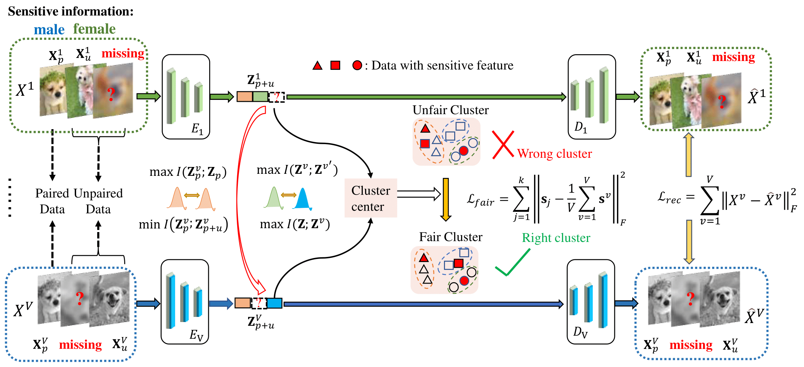

HaiMing Xu
Multi-modal Learning · Graph Neural Networks · LLM Alignment


" The only way to do great work is to love what you do. "
— Research · Build · Repeat

Deep Multi-modal Graph Clustering with Graph Transformer Network
AAAI 2024 | Accepted
A graph-transformer-based multi-modal clustering framework that jointly models structural topology and semantic representation for robust graph clustering.

Fair Multi-View Clustering via Attention-Based Kolmogorov-Arnold Networks
CVPR 2024 | Accepted
A fairness-aware multi-view clustering method that combines attention mechanisms with Kolmogorov-Arnold Networks to improve representation quality and group fairness.

Fair Incomplete Multi-View Clustering via Distribution Alignment
IJCAI 2025 | Accepted
A distribution-alignment framework for incomplete multi-view clustering, designed to handle missing views while preserving fairness across sensitive attributes.

Efficient Multi-view Clustering via Reinforcement Contrastive Learning
IJCAI 2025 | Accepted
An efficient multi-view clustering approach that introduces reinforcement contrastive learning to reduce redundant training signals and improve clustering performance.

LLM-DAMVC: A Large Language Model Guided Dynamic Agent Multi-View Clustering
NeurIPS 2025 | Accepted
An LLM-guided dynamic-agent framework for multi-view clustering, using heterogeneous agents, dual-domain contrastive regularization and adaptive feature modulation to move beyond static view fusion.

Adversarial Fair Incomplete Multi-View Clustering
AAAI 2025 | Accepted
An adversarial fair incomplete multi-view clustering framework that disentangles sensitive attributes and integrates probabilistic cross-view contrastive learning for robust and fair representations.
Tencent Yuanbao Search · LLM Optimization
Search-oriented LLM fine-tuning, evaluation and data feedback loop.
- Built evaluation and error-analysis workflows for relevance, timeliness, authority and answer quality.
- Supported preference-data construction, hard-case mining and reinforcement fine-tuning for search LLM behavior.
- Connected training, inference and evaluation signals into an iteration loop for faster model diagnosis.
ByteDance Jindouyun Offer
Selected for ByteDance's algorithm talent program before choosing the Tencent research internship track.
I am a master's student at Xidian University, working on multi-modal learning, graph neural networks and large language model alignment.
My recent work focuses on multi-view clustering, fairness-aware learning and LLM-guided representation learning, with publications in AAAI, CVPR, IJCAI and NeurIPS.
I also work on real-world LLM systems through my Tencent Rhino-Bird internship, covering model evaluation, data loops and reinforcement fine-tuning for search scenarios.